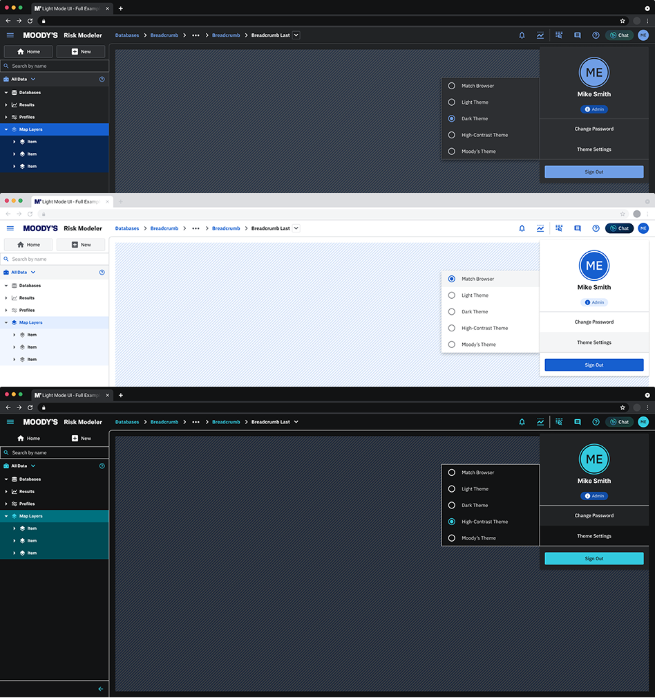
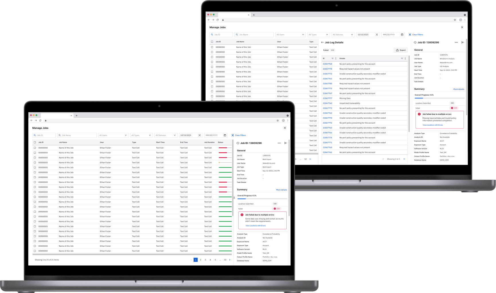

Product Designer, Nagarro Digital Ventures · Client engagement since Jan 2025
Overview
The short version, for anyone reading on the way into a meeting.
Moody’s is a global provider of data, analytics, and risk assessment solutions used by organizations operating in highly regulated and high-stakes environments. As a product designer within Nagarro Digital Ventures’ engagement, I’ve worked across five platform products: Data Admin, Data Bridge, Risk Data Lake, Exposure IQ, and TreatyIQ, restructuring the design system into a token-based architecture, redesigning data administration and access control, and rebuilding error messaging and analysis logs, so analysts across financial services, insurance, and public sector contexts can confidently navigate, understand, and act on critical data.
5Platform products designed for
1-2PMs collaborated with, per product
200+Engineers across all IRP products
3Themes shipped: Light, Dark, High Contrast
40+Countries served by these platforms
The work sits inside Nagarro Digital Ventures’ broader engagement with Moody’s, aligning closely with cross-functional teams across the client organization to make dense, high-stakes data tools feel more intuitive without losing their depth.
Problem Space
Moody’s products operate in a highly technical domain, where users navigate large volumes of structured and unstructured data, perform advanced tasks like querying, cataloging, and risk analysis, and expect precision, transparency, and performance throughout.
Key challenges identified across the initiatives I’ve worked on:
Fragmented workflows between tools and external platforms.
Steep learning curve for non-technical or semi-technical users.
Limited discoverability of data assets and actions.
Inconsistent UX patterns across integrated solutions.
My Role & Approach
Contextual Discovery. Deep understanding of JTBDs, system constraints, and technical dependencies.
UX Mapping. Mapping end-to-end flows across embedded and native experiences.
Component-Led Design. Designing within existing design systems while extending them when needed.
Iterative Validation. Regular syncs with PMs and engineers to validate feasibility and alignment.
Future-Facing Thinking. Designing not only for current needs, but for upcoming AI-based workflows.
Key Initiatives & Contributions
Four initiatives I led in depth, spanning AI-assisted workflows, design systems, platform governance, and error handling. Expand each for the full scope, approach, and outcomes.
AI-Assisted WorkflowsAuditing an AI-Generated Prototype Against the Design System
Non-SQL users needed a way to ask questions about risk data directly, instead of waiting on an analyst for every request. What made this initiative different wasn’t the chatbot itself — it was how the first version of it came to exist.
The PM took the requirements and, using an AI rapid-prototyping tool, turned them into a clickable chatbot prototype independently — a small but telling sign of how design and product roles are shifting as AI tools make it possible to go from requirements to a working UI without a designer in the loop. The prototype captured the scope, but it had no grounding in our actual design system: RadCode, our team’s own rapid-prototyping monorepo, built on Radius components and CSS tokens, with documentation written specifically for LLMs to follow. The PM’s version was visually improvised from scope alone, not built from real patterns.
That forced a question I hadn’t had to answer this directly before: what is my role when a non-designer can already produce a “good enough” clickable prototype with AI? The answer was to shift from making the pixels to auditing them.
My audit covered three layers
Requirements fit: checked the prototype against its own stated scope, flagging gaps between what was asked for and what was actually built.
Usability & trust: evaluated the flow against interaction and trust standards the original prototype hadn’t accounted for — source citations, verifiable answers, structured output.
Design system fit: mapped the AI-generated UI back onto our actual component library and tokens, rather than letting an improvised visual language ship as-is.
Non-negotiable requirements I introduced
Every answer must cite its sources and show the underlying query it ran, or it isn’t allowed to respond at all: no unverifiable answers.
Answers surface as tables, charts, and maps, not just text, so results are usable without a second export step.
A full conversation can be saved, reopened, and shared, so an investigation is reproducible, not a one-off chat.
Setting the quality bar
I pushed for explicit, measurable success criteria instead of a subjective “it feels fast enough”: answers in around 10 seconds, with anything over a minute treated as a failure state, and a fixed set of known-good test questions the AI has to pass before every release. Rollout was scoped as opt-in and internal-first, a deliberate trust-building sequence rather than a broad launch.
Why it mattered
AI tools are changing who can produce a first draft of an interface, but that draft still needs someone accountable for whether it’s usable, trustworthy, and consistent with the system it has to live inside. This became a template for how design partners with AI-assisted prototyping elsewhere on the platform: move fast with AI, audit against the system and the user, and don’t confuse a plausible-looking prototype with a validated one.
Design System & ThemingRestructuring the Design System Into Design Tokens
The existing design system wasn’t structured around tokens, which limited scalability and made theming difficult to implement and maintain. This work ran in parallel with feature delivery, prioritizing critical components first to avoid blocking product roadmap commitments.
Objective: enable scalable theming (Dark Mode and High-Contrast) by restructuring the existing design system into a token-based architecture, ensuring accessibility, consistency, and engineering feasibility across data-dense products.
Key contributions
Led the restructuring of the design system into a token-based model, defining semantic tokens (intent-based, theme-agnostic) and component tokens (contextual, reusable, and scalable).
Mapped legacy styles and components to the new token structure, identifying gaps and inconsistencies.
Defined token usage guidelines to support multiple themes without breaking hierarchy or meaning.
Worked hands-on with engineering, aligning design decisions with implementation constraints and validating feasibility early.

Outcomes
Established a scalable foundation for theming across the platform.
Unblocked Dark Mode and High-Contrast implementation without design debt.
Improved accessibility, contrast consistency, and long-session usability.
Strengthened design and engineering collaboration through shared system ownership.
Platform GovernanceRedesigning Data Administration & Access Control
While analysts and modelers work directly with risk data, Data Admin sits in between all IRP products, ensuring the platform functions safely, reliably, and at scale. This layer governs who can access what, how data flows between environments, and how systems are maintained over time.
Scope of work: platform operations, governance, and cross-product enablement.
Key contributions
Designed and refined experiences for user and role management, including permissions and access control across all products.
Contributed to flows for secure connectivity and VPN setup, reducing friction in complex infrastructure onboarding.
Worked on database management and archiving workflows, supporting data lifecycle, compliance, and long-term maintainability.
Helped define clear UX patterns for administrative actions such as configuration, validation, and system feedback.
In complex analytical systems, errors are inevitable. What matters is not whether something fails, but whether users can understand why it failed and what to do next. The system communicated failures in a highly technical manner, leaving users without a clear path to resolution.
Users had limited visibility into why model runs failed or partially completed. Skipped locations and technical errors were difficult to trace back to specific input data issues, which increased troubleshooting time, led to repeated trial-and-error reruns, and created unnecessary dependency on support teams.
Personas
Risk Analysts: need to quickly understand why a model run produced incomplete or unexpected results.
Catastrophe Modelers: require precise feedback to correct input data and rerun models efficiently.
Data Engineers: depend on structured logs to trace issues and validate data.
Approach
Led UX requirements gathering in close collaboration with Product, Engineering, and Subject Matter Experts.
Framed the problem using Jobs to Be Done, aligning system constraints with real user goals.
Established a clear conceptual distinction between warnings (informational, non-blocking) and errors (action required).
Designed the experience as a layered communication model: immediate, human-readable messages paired with deeper, structured analysis logs.

Outcome
Designed a structured analysis log, readable by humans and consumable by machines (CSV / JSON), including location identifiers, exclusion reasons, and severity classification.
Introduced interaction patterns that support sense-making: expanding and collapsing detailed entries, filtering by severity or error type, and copying and exporting logs for collaboration or auditing.
Error handling shifted from a reactive, support-driven process to self-service problem solving.
Other Initiatives Across the Platform
A quick look at a couple more initiatives across the platform’s five products, to show the range of problems I work on beyond the four above. Expand each for a quick overview.
Risk Data LakeEmbedding a SQL Editor Into the Platform
Today, clicking “SQL” inside Risk Data Lake redirects users to Databricks in a separate window, an experience disjointed from the rest of the platform. I scoped and designed an embedded SQL editor and data catalog so analysts never have to leave the product to query their own data.
Design approach
Mapped the workflow end to end across 7 distinct interface states, from an empty landing state through catalog discovery, multi-tab query authoring, execution, results, and query history.
Balanced power-user functionality (code editing, multi-tab queries, catalog browsing) against clarity and hierarchy, so the tool stays approachable for less technical users too.
Designed the information architecture to extend cleanly into future capabilities (Notebook, AI Assistant) without a redesign, rather than solving only for the SQL editor in isolation.
Why it mattered
This wasn’t just a UI request. It was a foundation decision: every future analytics capability on Risk Data Lake would sit on top of this catalog and editor pattern, so getting the information architecture right upfront mattered more than any single screen.
Exposure IQScoping Geospatial Analytics for Non-Technical Users
Underwriters and portfolio managers needed to analyze risk exposure geospatially, understand what was driving their portfolio, and spot growth opportunity, all without GIS expertise. This wasn’t a feature ask; it was a new product surface entering a market segment the platform hadn’t competed in before.
Scope & complexity
Scoped across 5 distinct user segments, from primary users (underwriters, portfolio managers, brokers) to secondary ones (ILS fund managers, claims teams), each with a different job to be done.
Spanned 6 workflow areas: bringing in your own geospatial data, map and scoreboard enhancements, saved views and reusable templates, accumulation analysis, notifications, and underwriter-specific quoting flows.
Aligned the design across 8 cross-functional engineering and QE teams, so the scope shipped as one shared mapping component rather than a one-off feature.
Why it mattered
The saved “map views” and “map templates” pattern was the key design decision: without it, every analysis would mean rebuilding the same filters and layers from scratch, which would have made the whole capability unusable at real-world scale.
This project is under NDA: some designs and details can’t be shown publicly. Reach out directly for more. For the rapid-prototyping and AI-tooling practice that grew out of this engagement, see RadCode.